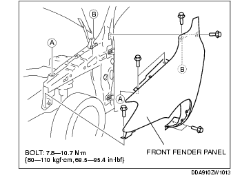

Front fender panel removal/installation
1. Disconnect the negative battery cable.
2. Remove the front side turn light.
3. Remove the windshield wiper arm and blade. (See WINDSHIELD WIPER ARM AND BLADE REMOVAL/INSTALLATION.)
4. Remove the cowl grille. (See COWL GRILLE REMOVAL/INSTALLATION.)
5. Remove the front bumper. (See FRONT BUMPER REMOVAL/INSTALLATION.)
6. Remove the front combination light. (See FRONT COMBINATION LIGHT REMOVAL/INSTALLATION.)
7. Remove the mudguard.
8. Remove the bolts, then remove the front fender panel.

9. Install in the reverse order of removal.
10. Adjust the headlight aiming. (See HEADLIGHT AIMING.)